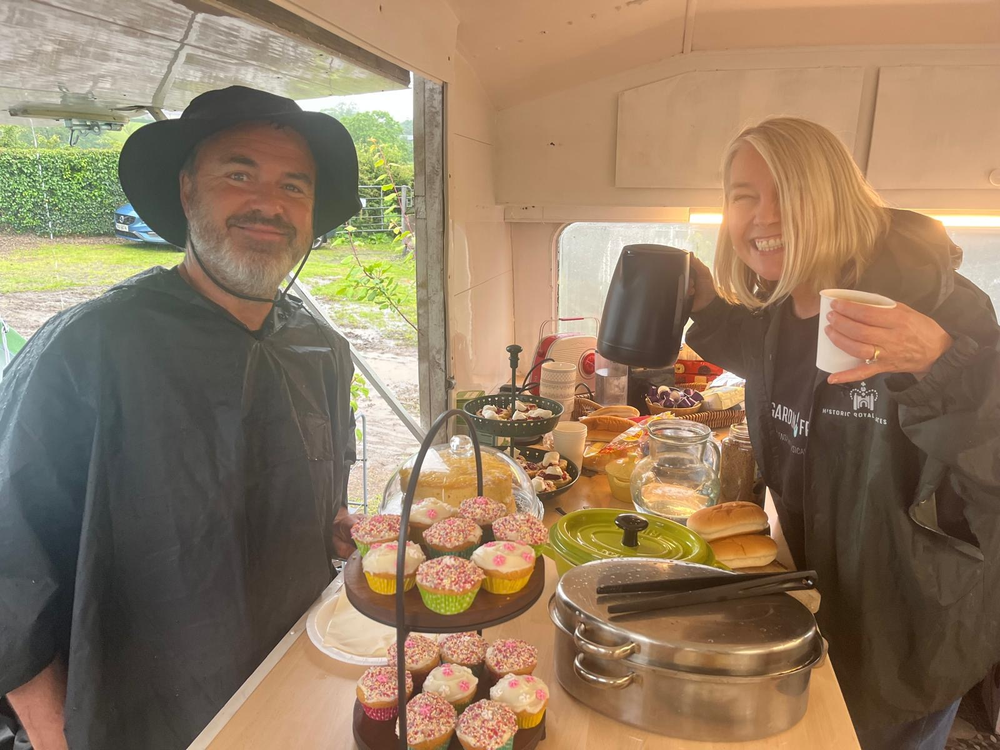
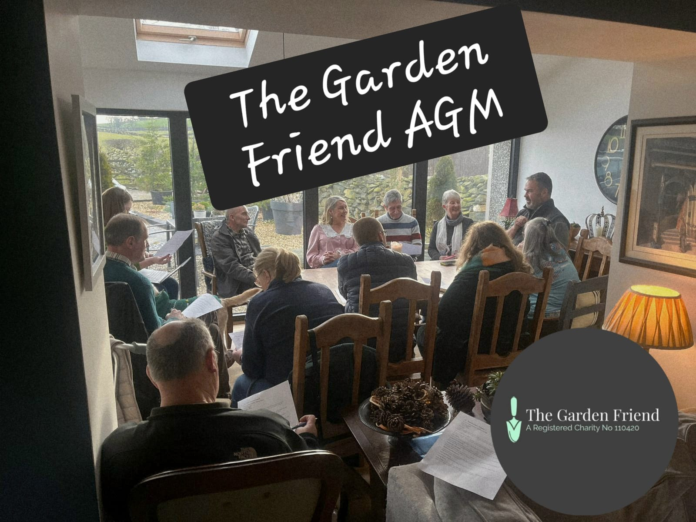
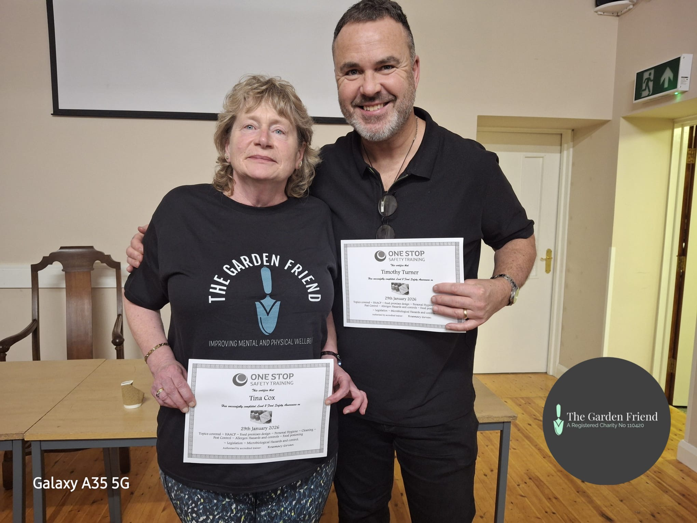
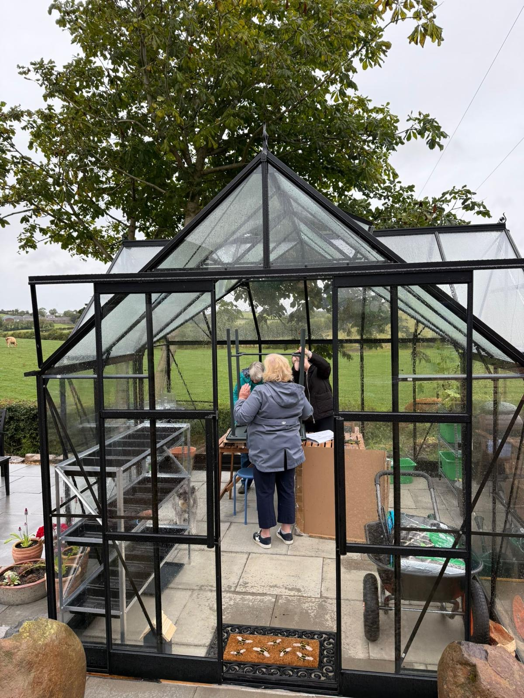

A welcoming space to grow, connect, and belong.
We transform unused land into thriving community patches.
Free workshops on sustainable growing and plant care.
To date, we've grown 500lbs of food and hosted 20 workshops.
The Garden Friend has worked hard to create a wellbeing garden that has a rhythm that feels calm, purposeful, and welcoming. When you arrive, the experience is designed to ease you in and give you a sense of belonging.
Experience a sense of belonging from the moment you arrive. We start with a check-in and a cup of tea in our caravan hub.
From the greenhouse to the open plots, tasks are varied to suit your energy and confidence level.

Working at a comfortable pace allows us to appreciate the garden's rhythm and celebrate small wins together.
Community wellbeing gardens aren’t just about gardening. We aim to:
Join us in the dirt! Here is what's coming up.
Live from the Garden
See what we're up to on Instagram & TikTok